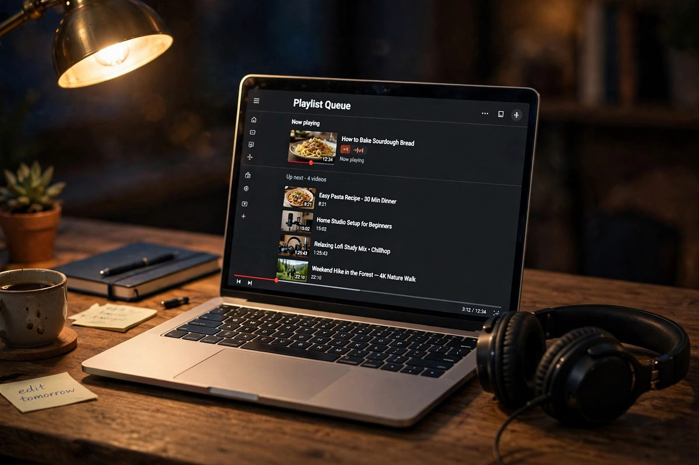

How to Download YouTube Playlists: Save Whole Collections Offline
Save an entire YouTube playlist for offline viewing, with the official method and practical limits.
A playlist is one of the most useful things on YouTube: a course, a music collection, a series of tutorials, or a set of videos for a trip. Downloading the whole playlist at once saves you from tapping Download on every video individually. This guide explains the official playlist download feature, how to estimate the space you need, and what happens when some videos in the list cannot be saved.
Download a playlist with Premium
Open the playlist in the YouTube app and tap the Download button at the top of the list. Every eligible video downloads in order, and you can follow progress in the Library under Downloads. The playlist keeps its order offline, which matters for courses and series where the sequence is the point. On the YouTube website, Premium members can also download playlists from the playlist page. This is the only bulk-download method YouTube supports.
Estimate the storage first
Before you tap Download on a 100-video playlist, do the maths. At 720p, an average ten-minute video is roughly 150 MB, so 100 videos need about 15 GB. At 1080p the same list needs roughly double. Check your free space in the phone settings first, and choose a lower quality for long playlists. If you are short of space, download the playlist in parts by creating a smaller playlist with only the videos you need most.
Videos that get skipped
Not every video in a playlist can be downloaded. Private videos, deleted videos, age-restricted videos, and videos the uploader excluded are skipped, and the app usually tells you how many were skipped when the download finishes. Music videos with licensing limits are also commonly skipped. If a video you care about was skipped, open it individually to see whether it offers a Download button; if it does not, that video is restricted by design.
Managing a downloaded playlist
Downloaded playlists appear in the Downloads section with the playlist name. You can delete the whole playlist download at once when you are done, which is the fastest way to free space. If new videos are added to the playlist later, the app may offer to download the new ones, but check the Downloads page to be sure. For a course or a series you will rewatch, keep the playlist downloaded; for a one-off trip, delete it when you return and reclaim the space.
Playlists as a learning system
A playlist is more than a collection of videos: it can be a complete course, a revision system, or a research library. The trick is to keep playlists small and purposeful, with no more than twenty or thirty videos each, because a playlist with two hundred videos is a pile, not a plan. Name each playlist for the outcome, such as Learn Basic Photography, rather than for the topic alone, and put the videos in the order you should watch them. Watch the playlist in order, take notes as you go, and delete videos that turn out to be irrelevant. If you are learning a skill, create a second playlist for practice videos and a third for reference material you will return to. Download the playlist before a trip or a period without internet, and work through it offline. A well-kept playlist turns YouTube from a distraction into a classroom.
Frequently Asked Questions
Can I download a whole playlist at once?
YouTube Premium lets you download a playlist in the app with one tap. Without Premium there is no official bulk download.
What if some videos in a playlist fail?
Private, deleted, or restricted videos are skipped. The rest of the playlist still downloads.
How much space does a playlist need?
Multiply the average video size by the number of videos. A 50-video playlist at 720p can easily need 20 GB or more.